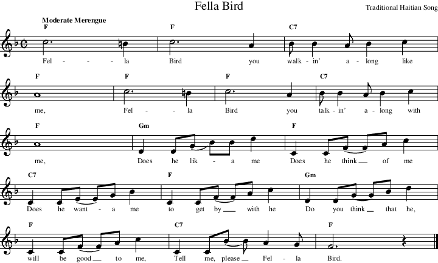

Next: A More Complex Example Up: Tutorial Previous: Installation
| Sheet Music for a Popular Song |
|  |
This example piece of music is shown in a “fake book” or “lead sheet” style. It shows the melody notes, lyrics and chords.
If you are following along and want to try the examples please not that you create them by using a text editor of your choice which does not do formatting. Don't use a word processing package; use something like emacs, vim or notepad.
As a first try at making a MIDI accompaniment file, we have created the following file:
// Sample tutorial file
// Fella Bird, try 1
Tempo 120
Groove Rhumba
1 F
2 F
3 C7
4 F
5 F
6 F
7 C7
8 F
9 Gm
10 F
11 C7
12 F
13 Gm
14 F
15 C7
16 F / / z!
After the comments in the file, the first line to note is:
| Tempo 120 |
This sets the tempo, or speed, of the piece to 120 beats per minute. You may have to guess the tempo—very few pieces (especially in “fake book” style) will include a metronome setting. For slow pieces you might want to start with a tempo setting of “80”; for faster pieces, like swings, try around “150”; polkas and marches, which are really in 2/2 time, may require fast sounding tempos like “250”. Feel free to modify the tempo setting in the example files—you're not going to break anything.
Since we are using the standard library which was shipped with MMA , we can select one of the predefined grooves:
| Groove Rhumba |
Note that this command also sets up the “time signature” to 4/4. Not quite the same as the “cut” time indicated, but close enough. And speaking of “close enough”, we're using a rhumba rhythm instead of the merengue indicated in the score.
Finally, we have the chord information. The first bar (in the sheet music) indicates an “F” chord. So that's what we tell MMA to use:
| 1 F |
We continue in a similar manner for the rest of the song.
We've simplifed the song a bit and show only one chord per bar. MMA automatically fills out the bars so that each has four chords. We could have entered the first bar as:
| 2 F F F F |
or, more simply:
| 2 F / / / |
and had the same result. But, who wants to do all that typing?
In the final bar, the last beat is a rest.
The line:
| 16 F / / z! |
causes an “F” chord to be used on the first three beats, the fourth beat is completely silent due the to the “z!”. Note the difference between a “z” and “z!”—the first silences all but the drum track, the second silences everything. See the reference manual for more details on “z”.
Now, let's create our first MIDI file! If you are using the standard distribution, you should find a file “fella1.mma” in the tutorial directory. Change to this directory and type the command:
| mma fella1 |
Your computer should run the python script called “mma” and process the file “fella1.mma”. The MIDI file “fella1.mid” should be created. If this doesn't happen, please check your python installation, and make sure that you have installed “mma” where your shell can find it. On Windows systems which do not have case sensitive filenames you may need to use the command “mma.py fella1”. If you are completely stuck, drop me an email.
Now, use your favorite MIDI file player to play the song.
How'd that sound? A piano doing some chords, a jazzy bass line, and a bit of drumming? Wonderful!
If you play the MIDI created in the previous section you'll find a number of things lacking. Certainly:
The following example has a number of improvements:
// Sample tutorial file
// Fella Bird, try 2
Tempo 120
Groove Metronome2-4
z * 2
Groove Rhumba
Repeat
Volume mp
Cresc mf 4
1 F
2 F
3 C7
4 F
5 F
6 F
7 C7
8 F
9 Gm
10 F
11 C7
Decresc p 4
12 F
13 Gm
14 F
15 C7
RepeatEnding
16 F / / z
RepeatEnd
17 F / / z!
cut -1
Try running
MMA on this file and listen to it. Oh my, much better.
So, let's look at the changes.
| Groove Metronome2-4 |
This sets the current “groove” to a metronome. To find this groove MMA will automatically process the library file “metronome”.
The metronome groove consists of wood-blocks being struck in a 4/4 pattern. In order to “sound” the metronome, we need to create an empty bar:
| z * 2 |
Mind you, we could have specified a chord here and gotten the same result (the groove has no definitions for any instruments other than the wood-block, so nothing else will sound). But, it seems to be more clear to use a “z”.
Okay, we lied. We didn't create an empty bar for the metronome. If you're sharp you'll notice that the “z” is followed by “* 2”. This means to play this bar two times. So, you get 2 bars of metronome. Cool.
We've not made any changes to the chords, but a few little changes do help this simple piece. Remember the dull, single volume? Well, have a look at the “volume” directives we've included in this version. We start the song off at a moderate volume, and increase it in several steps. And, at the end we use a “decresc” to reduce the volume to “quiet” over the final 4 bars.
Please refer to the MMA Reference Manual for salient details on the volume commands.
One minor change we did make in the chords is in bar 16. Note the change between this and bar 17. In the first we have a “z”, the second a “z!”. The difference between the two is that we want the precussion tracks to continue though the ending, but not on the final beat.
Finally, to ensure a complete cutoff in the final bar we have added a “cut” command. We're sure you'll find these minor changes a great improvement.